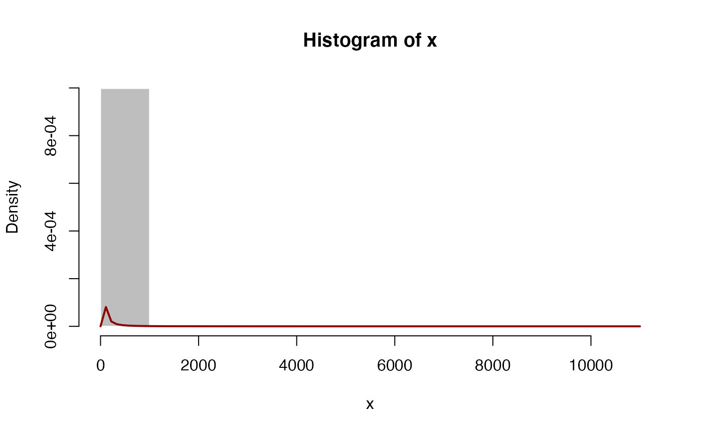

Density, distribution function, quantile function and random generation
for the Burr Type III Three-Parameter distribution with
lshape and lscale parameters.
dburrIII3(x, lshape1 = 0, lshape2 = 0, lscale = 0, log = FALSE)
qburrIII3(
p,
lshape1 = 0,
lshape2 = 0,
lscale = 0,
lower.tail = TRUE,
log.p = FALSE
)
pburrIII3(
q,
lshape1 = 0,
lshape2 = 0,
lscale = 0,
lower.tail = TRUE,
log.p = FALSE
)
rburrIII3(n, lshape1 = 0, lshape2 = 0, lscale = 0)
sburrIII3(x)| x | The object. |
|---|---|
| lshape1 | shape1 parameter on the log scale. |
| lshape2 | shape2 parameter on the log scale. |
| lscale | scale parameter on the log scale. |
| log | logical; if TRUE, probabilities p are given as log(p). |
| p | vector of probabilities. |
| lower.tail | logical; if TRUE (default), probabilities are |
| log.p | logical; if TRUE, probabilities p are given as log(p). |
| q | vector of quantiles. |
| n | number of observations. |
dburrIII3 gives the density, pburrIII3 gives the distribution function, qburrIII3 gives the quantile function, and rburrIII3 generates random samples.
The Burr 12 distribution from the actuar package is used as a base. The Burr III distribution is the distribution of 1/x where x has the Burr Type 12 distribution. refer to https://www.itl.nist.gov/div898/software/dataplot/refman2/auxillar/bu3pdf.htm for details. The shape1, shape2, and scale parameters are on the log(scale) as these must be positive.
x <- rburrIII3(1000)
#> Warning: `rburrIII3()` was deprecated in ssdtools 0.2.1.
#> The 'burrIII3' distribution is under review.
hist(x, freq = FALSE, col = "gray", border = "white")
curve(dburrIII3(x), add = TRUE, col = "red4", lwd = 2)
#> Warning: `dburrIII3()` was deprecated in ssdtools 0.2.1.
#> The 'burrIII3' distribution is under review.
